Un DAW minimalista para hacer música: graba, compón con MIDI, mezcla con nuestros plugins y exporta tu canción.
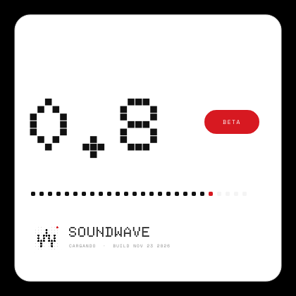
| 01 Instalar | 02 La interfaz |
| 03 Librería | 04 Pistas y envíos |
| 05 Regla, loop, zoom | 06 Clips y MIDI |
| 07 Grabar | 08 Plugins |
| 09 Vista GRID | 10 Exportar |
| 11 Los 16 plugins | 12 Atajos y ayuda |
Descarga el instalador de tu sistema desde la página de descargas del proyecto (Releases → latest).
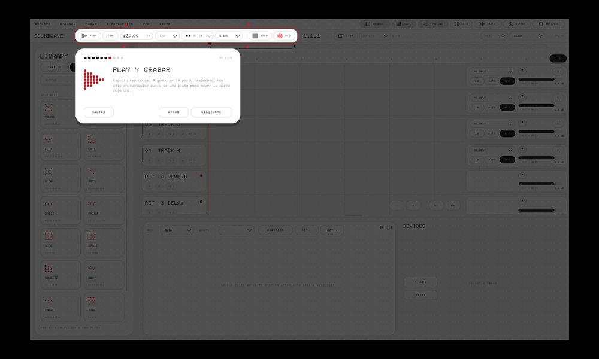
Al abrir SoundWave por primera vez, un tour de 10 pasos resalta cada parte de la pantalla y te explica para qué sirve.
Audio: en SETTINGS → AUDIO elige tu tarjeta de sonido, sus entradas y salidas.
Todo está en una sola ventana: la librería a la izquierda, las pistas en el centro y el panel de edición abajo.
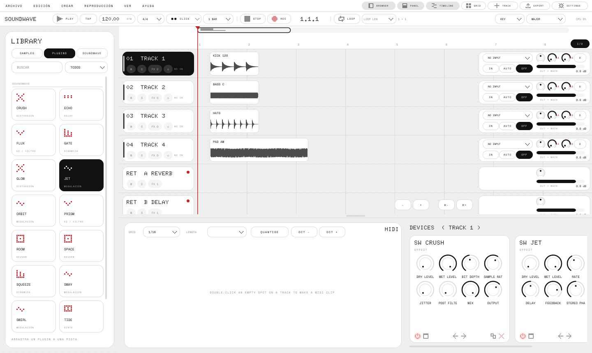
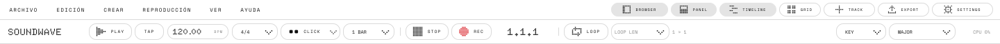
Tres pestañas: SAMPLES (tus carpetas de audio), PLUGINS (todos los plugins instalados) y SOUNDWAVE (solo los nuestros).
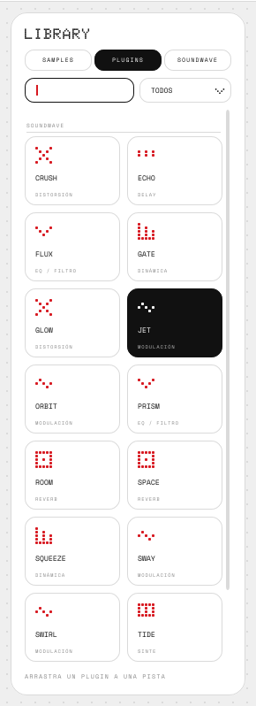
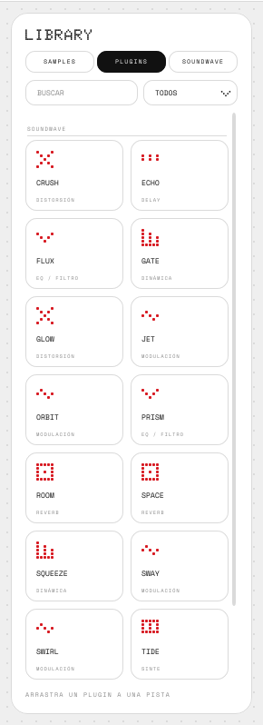
Hay dos tipos de pista: AUDIO (raya negra) para voz, guitarra o samples, y MIDI (raya roja) para instrumentos virtuales.
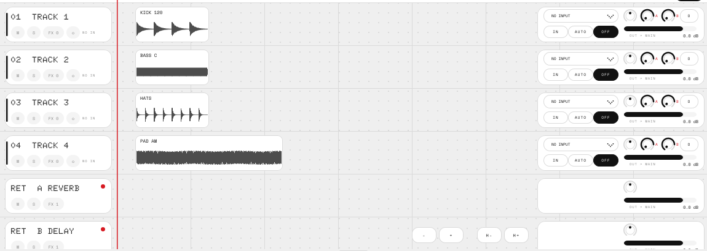
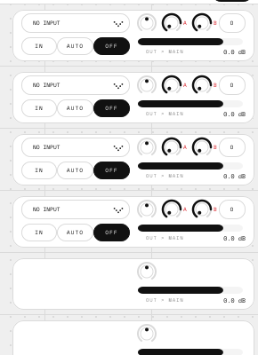
La regla de arriba tiene tres franjas: la canción entera, el loop y los números de compás.
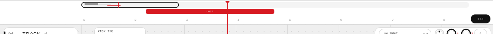
Las pistas MIDI tocan instrumentos virtuales, como nuestro sinte SW TIDE.
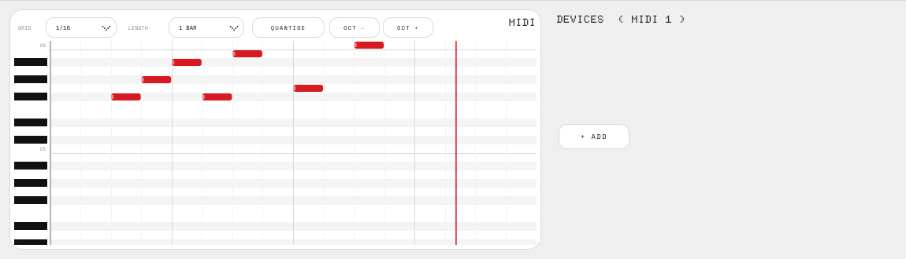
Graba voz, guitarra o tu teclado MIDI directamente en una pista.
Enciende CLICK para grabar a tempo. Con clic derecho en CLICK eliges el sonido, el volumen y una cuenta previa antes de empezar a grabar.
Selecciona una pista: abajo a la derecha verás su cadena de plugins, una tarjeta por plugin.
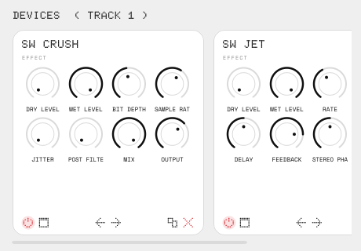
Agarra una tarjeta y arrástrala a izquierda o derecha para cambiar el orden. El sonido pasa por los plugins de izquierda a derecha.
Pulsa Tab para cambiar entre TIMELINE (la canción de principio a fin) y GRID (clips sueltos para lanzarlos en directo).
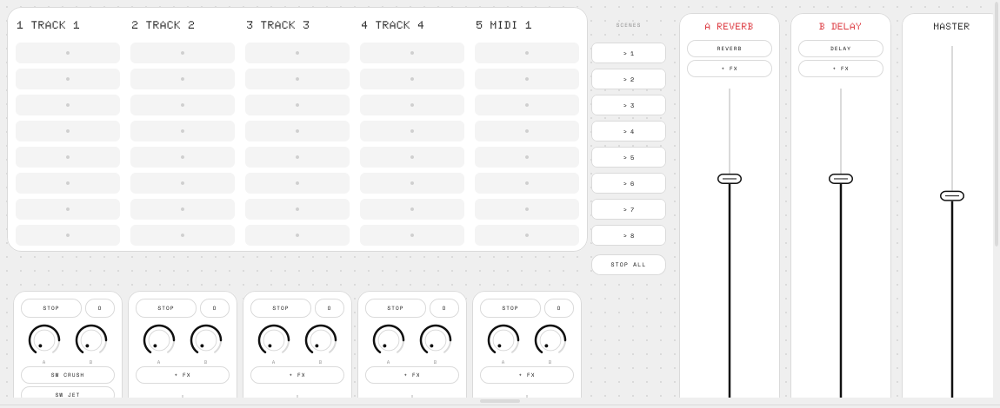
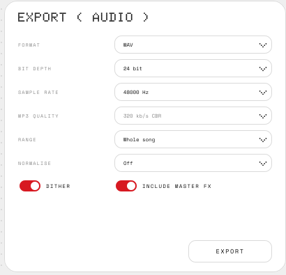
En Mac Intel por ahora solo WAV.
También funcionan en Ableton, FL Studio, Logic, Reaper y cualquier DAW con VST3/AU.
Compresor con mezcla paralela.
Limitador brickwall para el master: más volumen sin saturar.
Puerta de ruido: corta el sonido por debajo del umbral.
Ecualizador paramétrico de 6 bandas.
EQ dinámico: una banda que solo recorta cuando esa zona suena fuerte.
Reverb algorítmica con pre-delay y corte de graves en la cola.
Reverb de convolución: carga cualquier respuesta de impulso WAV/AIFF. Trae 3 espacios.
Delay estéreo / ping-pong sincronizado al tempo, con filtro en la realimentación.
Chorus.
Flanger.
Phaser.
Auto-pan / trémolo, libre o al tempo.
Saturación tipo válvula.
Bitcrusher: reduce bits y frecuencia de muestreo.
Corrección de afinación en tiempo real para voces.
Sinte wavetable: 2 osciladores, unison, filtro, 2 envolventes y LFO.
En Mac usa Cmd donde pone Ctrl.
| Espacio | Play / pausa |
| R | Grabar |
| Inicio | Volver al principio |
| Tab | TIMELINE / GRID |
| Ctrl+T | Pista de audio |
| Ctrl+Shift+T | Pista MIDI |
| Ctrl+Shift+M | Clip MIDI en el cursor |
| Ctrl+E | Cortar clip |
| Ctrl+D | Duplicar clip |
| Supr | Borrar clip |
| Ctrl+L | Loop |
| Ctrl+Z · Ctrl+Y | Deshacer · rehacer |
| Ctrl+S · Ctrl+O | Guardar · abrir |
| Ctrl+Shift+R | Exportar |
| Ctrl+Alt+B · Ctrl+Alt+L | Librería · panel |
Ratón: Alt al arrastrar = sin rejilla · doble clic en un knob = valor por defecto.